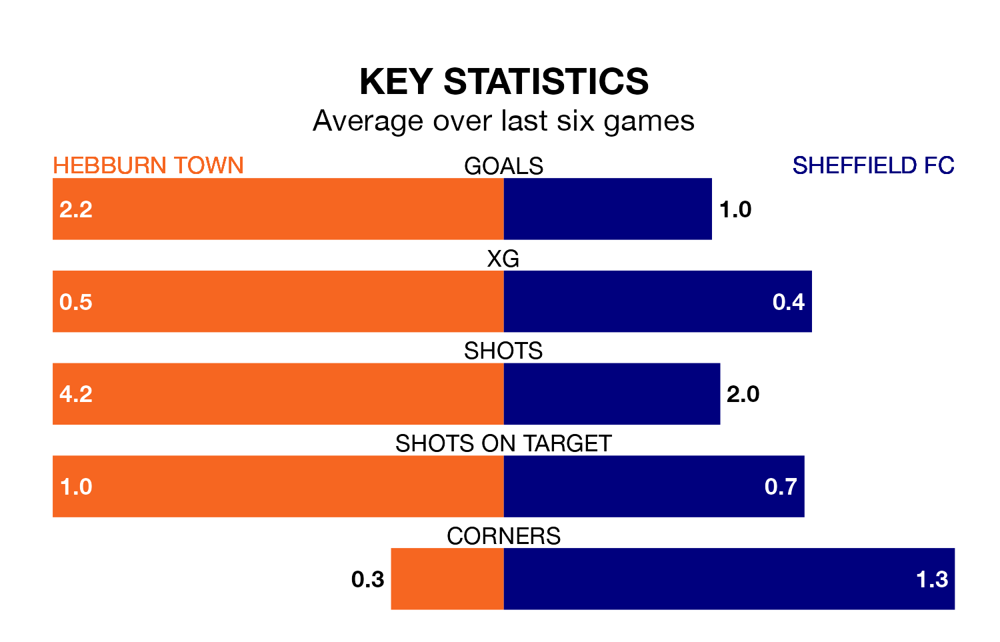

Hebburn Town host Sheffield FC in Tuesday's late match looking to bounce back from defeat last time out in the Northern Premier League Division One East.
Hebburn, who sit second in the league after 16 games, fell to a 0-1 away defeat to Bridlington Town on Saturday.
They face a Sheffield FC side who picked up a win in their last match, a 1-0 victory against Brighouse Town, and who sit 18th in the table.
With 32 goals in 16 games so far this season, Hebburn are the league's third-highest scorers with 2.0 goals per game. And they are conceding fewer than average, letting in 17 goals at a rate of 1.1 per game.
Sheffield FC, meanwhile, are below average scorers, with 1.5 goals per game, compared to a league average of 1.6. They have conceded 2.1 goals per game.
Town are in good form in the Northern Premier League Division One East, with four wins and two draws from their last six games.
With a win and a draw over that period, the away side's form is much worse – they have taken four points from 18, compared to the hosts' 14.
